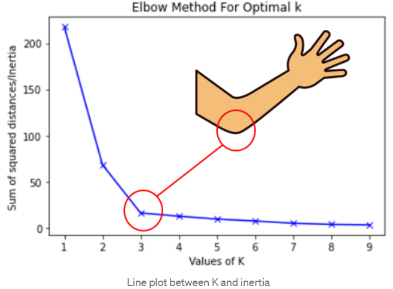

AIDAMS · Marketing Analytics
Session 1
Introduction & Segmentation
About me
Let us get to know each other first
- My name is Ebrahim (Ebi) Barzegary
- PhD in Marketing from University of Washington
- Worked as Business Analysis Manager / Data Scientist
- Expert in computer science & engineering — algorithm design
I want to get to know you
Raise your hand if…
- You want to be an engineer
- …a consultant
- …a researcher
- …an entrepreneur
- …a data scientist
- You have already developed a software idea
- You want to specialize in marketing
What is marketing?
Consequences of this definition
- This framing makes exploitation and manipulation possible
- It is based on a push strategy — firms create demand and push products toward customers
- Customer needs can be secondary to what the firm wants to sell
How marketing has changed
- Marketing as an art
- Based on the intuition of the marketer / business owner
- No way for measuring its effectiveness
- More systematic marketing
- An effort to make marketing more systematic
- Techniques become ineffective, isolated after a while
- An evolving learning algorithm
- Focus on changing customer preferences
- Focus on personalization
- Constant measurement, experimentation, and change
- Only possible in the current data-driven era
Marketing in the data era
- Advances in data gathering, processing, and experimentation techniques
- We can constantly see what works
- Real-time measurement of KPI
- Experimentation possibilities
- Especially possible in the digital environment
- We have huge data on consumers
- We can predict their behavior
- Marketing techniques are designed by machines
- We can constantly change / personalize marketing interventions
Three modeling paradigms
Business questions fall into three groups
Descriptive
Describe and visualize data; find relations.
Mostly unsupervised ML
Predictive
Predict outcomes such as purchase / click.
Causal / Inferential
Did marketing decision X cause outcome Y?
Analytical approach to marketing
In this class
- Focus on analytics for the 4 Ps — Product, Pricing, Place, and Promotion / Advertising
- Cover all three modeling paradigms across business applications
- Eventual goal: given a business problem, provide a clean data-driven solution
- Requires conceptual understanding and hands-on work
- A good data scientist knows why, not just how — you will see this in interviews
Class format
1. Lectures
- Start with managerial questions
- Discuss why the questions matter
- Statistical methods to answer them
2. In-class consulting
- Usually the second half of class
- Apply methods on real-ish problems
In-class consulting projects
What?
- Short analytics consulting projects during class
- Application of concepts just learned
- Individual or pairs
- Not graded, but submission required
How / Why?
- Bring a laptop + stable internet
- Google Colab account
- Download materials from Moodle
- Real applications that prepare you for assignments
Evaluation
6 mini quizzes · 15%
- Short quizzes to keep attention
- Typically at the start of the second half of class
5 assignments · 85%
- Mix of individual and group work
- Download / manipulate data, run Python, recommend
- ~4–6 hours each on average
- Each builds on an in-class consulting task
- Delivered as a Google Colab notebook
Assignment discussion board
- Need clarifications? Post in the class forum
- Do not email me unless it is a personal issue
Why?
- Many students have the same questions
- Keeps everyone on equal footing
- Lets students answer each other and learn collaboratively
Class participation bonus
Reward constructive, consistent contributions
In class
Ask thoughtful questions, share insights
Class forum
Answer peers, clarify concepts, share useful resources
Generative AI policy
Encouraged
- AI will be part of your work environment — learn it
- Use it to learn and go beyond what you already know
Caveats
- AI can be wrong — and confident
- Assistant / helper, not replacer
- Ask it to explain code; get step-by-step guidance
- I expect you to know your code and edit it if asked
Google Colab
- Submit assignments as a Python notebook link (Google Colab)
- Share the Colab notebook with me
Coding best practices
- Short, useful comments
- Modular (function-based) programming
Managerial questions
- How do I segment customers into groups?
- Different needs / preferences across groups
- People in the same group are fairly similar
- How can I target each group?
- Where to find them
- Best advertising approach for them
Why segmentation
A company deals with hundreds, thousands, even millions of customers/prospects every day
- You cannot treat them all the same way
- They have different needs, wants, profiles, profit potential
- You cannot treat them all differently
- They are too many
- A company rarely has enough resources/capabilities to customize everything (product, offer, price, communication) with everyone
What is a good segmentation
- Distinct from the other segments
- Homogeneous
- If two segments look alike, don’t split them
- If not homogeneous within, same treatment fails
- Identifiable
- Not only conceptual — also operational
- Hard to identify/target → low value
- Substantial
- Not only about headcount
- Worth treating separately
- Useful, operational, and informative
- Too many segments kill the purpose
- What does it teach for strategy?
What is the optimal way of segmenting a deck of cards?
Uses of segmentation (short term)
- Resource allocation — salesforce, call planning, direct marketing
- Communication — different email templates per segment
- Pricing — different prices to different segments
- Promotions — e.g., back-to-school to students
Uses of segmentation (long term)
- Strategic positioning — enter a new market with limited resources
- Product development — design for a segment; find niches
- Emerging needs — identify today’s small groups that may represent future mass demand
1. Define the segmentation problem
Internal assessment
- Objective(s) of segmentation? (critical)
- Resources? Constraints?
Database review
- Primary: data we own
- Secondary: partners / public
- Third-party: data we buy
2. Identify data needs
What data best answers the business problem?
- Socio-demographic / firmographic?
- Past behavior, purchases, scanner, online footprints, IoT usage?
- Deep needs, benefits sought, perceptions?
3. Conduct market research (if needed)
Qualitative
- Interviews, sources, materials
- “Deep needs” identification
- Decision-making process
- Which criteria / questions?
Quantitative
- Sample design
- Questionnaire development
- Data collection
4. Build the segmentation database
1. Segmentation variables (bases)
Why segments differ: needs, wants, benefits, usage situation, usage rate, decision processes, past behavior
2. Discriminant variables (descriptors)
How to find / reach segments: age, income, education, lifestyles, media habits, firmographics…
5/6. Define & describe segments
- How many? Not too many / not too few — functional and intuitive
- How defined? Segmentation variables — name each segment
- How reached? Discriminant variables / descriptors
Step 1 · Deep needs survey
- Large US survey · ~3,000 respondents · ~140 questions
- Deep needs, beliefs, values (future, success, priorities, environment…)
- Past party vote
Step 2 · Segmentation
- Found 5 segments, e.g.
- “Extending opportunities to others” (37%)
- “Working within the community”
- “Achieving independence”
- “Focusing on family”
- “Defending righteousness” (16%)
Step 3 · Focus on swing voters
- Extending opportunities… — Democrats; no need to convince
- Defending righteousness — hard Republicans; don’t bother
- Swing potential: community / independence / family
Step 4 · Discriminant analysis
- Bought descriptor data (ChoicePoint, Acxiom, …)
- Tax / court / shopping / lifestyle data on millions of Americans
- Predict segment membership from descriptors
More Democrat-leaning signals
Cat · sushi · Apple computer · …
More Republican-leaning signals
Dog · Pontiac · gun · church · …
Step 5 · Targeting (mail)
Tight race in eastern North Carolina
- Buy ~20,000 addresses likely in “Working within the community”
- Send tailored direct mail about helping local community groups
Step 5 · Targeting (TV)
- Check TV programs “Focusing on family” watches
- Buy spots; advertise children’s education / family welfare
Introduction to K-means
- Unsupervised ML: no outcome Y — only features X
- Partition data into K distinct, non-overlapping clusters
- Marketing apps: customer segmentation; behavior patterns; behaviors that lead to churn
How K-means works
- Initialize: choose K; pick K centroids
- Assign: each point to nearest centroid
- Update: centroid = mean of its points
- Repeat until centroids stabilize
A visualization of K-means
Loading…
Distance & normalization
- Euclidean distance — most common metric between points
\( d(p,q) = \sqrt{\sum_{i=1}^{n}(p_i - q_i)^2} \)
- Why normalize? different scales (age vs income); large-range features dominate
- Min–max → usually \([0,1]\) · Z-score → mean \(0\), SD \(1\)
Choosing K
- Elbow method — plot within-cluster SSE; look for the “elbow”
- Judgment — try several K; choose what is useful for the decision

Discriminant analysis
- Bases define segments (often survey-only) → used for clustering
- Descriptors describe / find segments (often in secondary data) → used for targeting
Goal: can we find (target) people in each segment using descriptors alone?
Assessing discriminant quality
- Build a predictive model: descriptors → predicted segment
- Compare predicted vs actual membership → confusion matrix & hit rate
| Pred. 1 | Pred. 2 | Pred. 3 | Total | |
|---|---|---|---|---|
| Actual 1 | 13 | 2 | 3 | 18 |
| Actual 2 | 2 | 12 | 0 | 14 |
| Actual 3 | 3 | 1 | 4 | 8 |
| Total | 18 | 15 | 7 | 40 |
Correct: \(13+12+4=29\) of 40 → hit rate \(29/40 = 72\%\)
The case
- Survey current and past participants on motivations for joining
- 18 questions (1–5 scale)
- Include a few descriptors
Goals
- What segments exist in the program?
- What are their needs and wants?
- Create custom modules for each segment to improve satisfaction
- How can we reach and acquire new students?
- Marketing message · negotiation · targeting